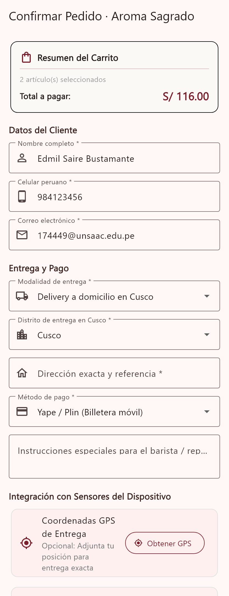
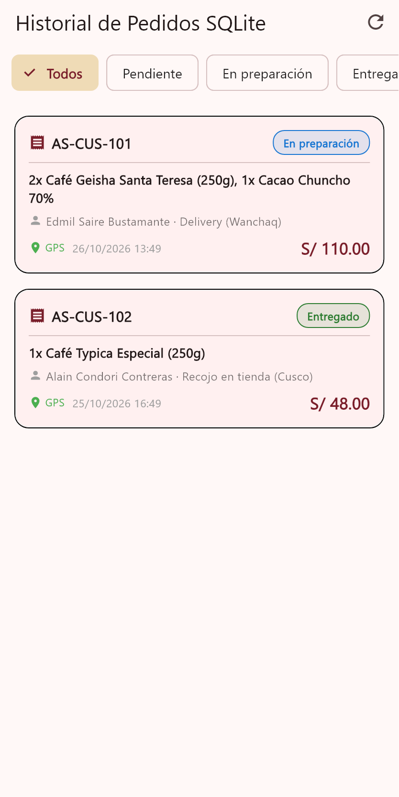
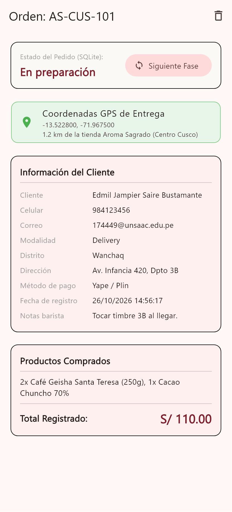
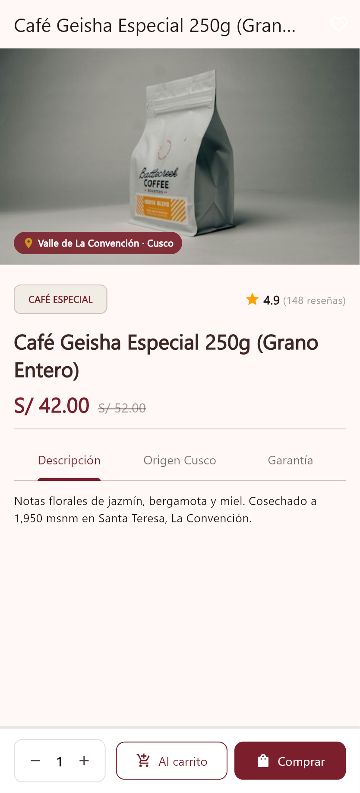
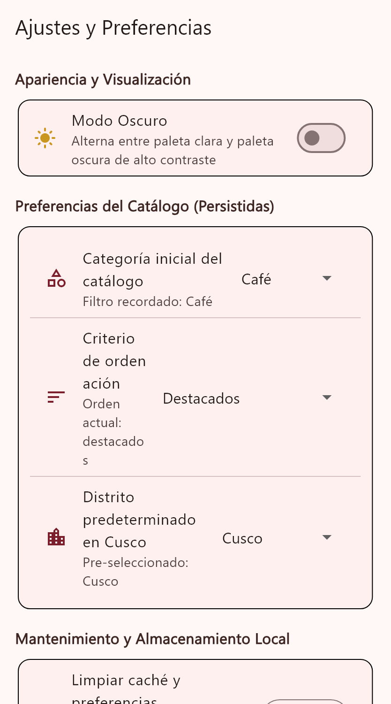
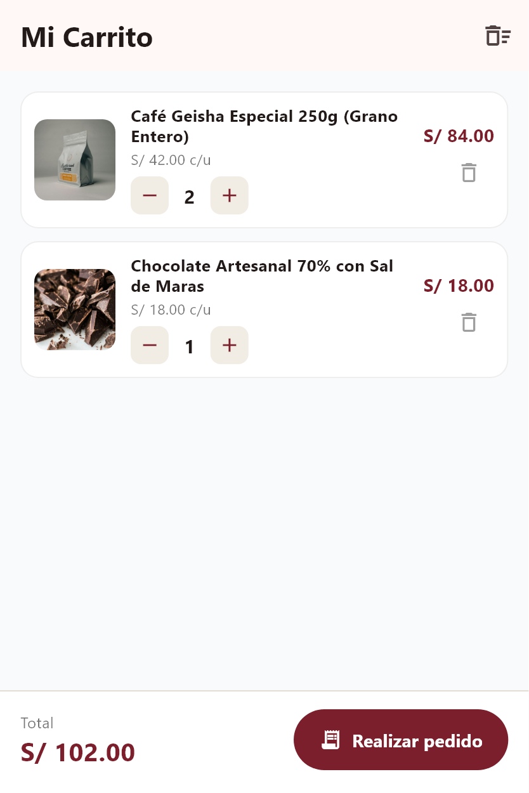
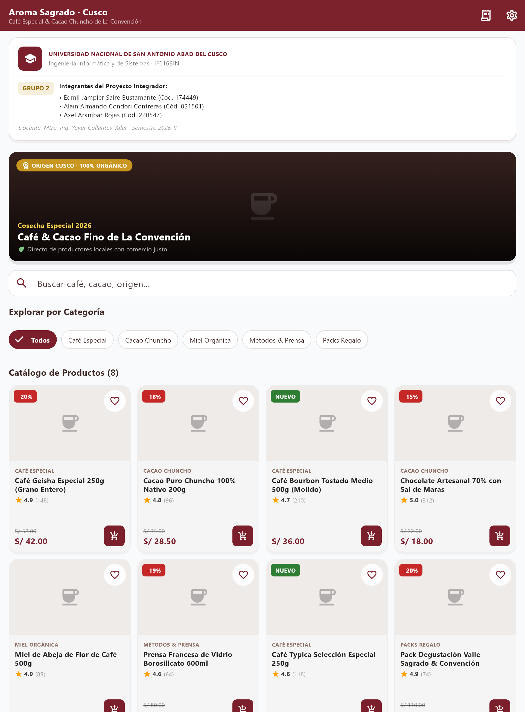

Universidad Nacional de San Antonio Abad del Cusco
Facultad de Ingeniería Eléctrica, Electrónica, Informática y Mecánica
Escuela Profesional de Ingeniería Informática y de Sistemas
Informe Técnico · Sesión 07 (Unidad II)
Estados, Persistencia SQLite, Formularios y Sensores
Evolución e Implementación Completa de la App Móvil «Aroma Sagrado · Cusco»: Ciclo de Vida de Estado, Base de Datos Local Relacional, Sensores GPS / Cámara / Acelerómetro y Navegación Avanzada
Rúbrica Oficial de Evaluación: 20 / 20 Puntos
Asignatura
Desarrollo de Software II — IF616BIN
Semestre
2026-II
Docente
Mtro. Ing. Yover Collantes Valer
Proyecto
Aroma Sagrado · Cusco (Catálogo de Cafés de Especialidad y Cacao Chuncho)
UNSAAC · EPIS · Desarrollo de Software II (IF616BIN)Página 1 de 6
1.Introducción y Objetivos
El presente informe técnico documenta la implementación integral de la Sesión 07 de la asignatura Desarrollo de Software II en la Universidad Nacional de San Antonio Abad del Cusco (UNSAAC). El proyecto «Aroma Sagrado · Cusco» evoluciona de un prototipo de interfaz gráfica hacia un sistema de software móvil de grado productivo que resuelve el problema de trazabilidad, pedido y geolocalización de cafés de especialidad cusqueños (La Convención, Quillabamba y Valle Sagrado).
Objetivos Académicos Logrados:
Gestión de Estado y Controladores: Empleo riguroso de StatefulWidget, ChangeNotifier y Provider, garantizando liberación de memoria en dispose() para controladores de texto, nodos de foco, controladores de desplazamiento y suscripciones a flujos.
Persistencia Local Relacional (SQLite): Creación de la base de datos pedidos_aroma_sagrado.db con tabla pedidos, índices y operaciones CRUD completas mediante el patrón repositorio (PedidoRepository), aislando toda sentencia SQL de la interfaz.
Persistencia de Preferencias: Integración de SharedPreferences vía PreferenciasService para tema visual, distrito y datos de contacto.
Formularios y Validaciones: Construcción de un formulario de checkout con 6 reglas de validación (sincrónicas y asíncronas) y prevención de doble envío.
Integración con Hardware y Sensores: Geolocalización GPS (geolocator), cámara/galería (image_picker) y acelerómetro físico (sensors_plus).
2.Arquitectura del Sistema y Organización de Capas
Se implementó una arquitectura limpia desacoplada en 7 módulos especializados bajo los principios de Responsabilidad Única (SRP) y Don't Repeat Yourself (DRY):
lib/
├── main.dart # Inicialización FFI SQLite, SharedPreferences, MultiProvider y Rutas
├── models/
│ ├── producto.dart # Dominio de producto con serialización JSON
│ ├── item_carrito.dart # Línea de compra reactiva
│ └── pedido.dart # Entidad relacional SQLite con toMap/fromMap y EstadoPedido
├── data/
│ ├── catalogo_data.dart # Catálogo maestro de cafés cusqueños
│ ├── database_helper.dart # Singleton SQLite, apertura resiliente y semillas iniciales
│ └── pedido_repository.dart # CRUD SQLite y validación asíncrona de duplicados
├── services/
│ ├── preferencias_service.dart # Wrapper singleton SharedPreferences (tema, distritos, contacto)
│ ├── ubicacion_service.dart # GPS Geolocator con degradación elegante a Plaza de Armas
│ └── camara_service.dart # ImagePicker para fotos y persistencia local en /comprobantes
├── providers/
│ ├── tema_provider.dart # Gestión reactiva de ThemeMode (Claro / Oscuro)
│ ├── favoritos_provider.dart # Colección reactiva de cafés favoritos con persistencia
│ └── carrito_provider.dart # Carrito de compras con totales y reglas de negocio
├── screens/
│ ├── main_screen.dart # Navegación inferior con IndexedStack y Badges en vivo
│ ├── catalogo_screen.dart # Búsqueda local, ScrollController y botón flotante interactivo
│ ├── detalle_producto_screen.dart # Navegación tipada con tabs (Descripción, Origen, Garantía)
│ ├── checkout_screen.dart # Formulario con 6 validaciones, GPS, Cámara y persistencia SQLite
│ ├── historial_pedidos_screen.dart # Consulta SQLite reactiva, filtros ChoiceChip y búsqueda
│ ├── detalle_pedido_screen.dart # Visualización de comprobante, cálculo km GPS y cambio de estado
│ ├── ofertas_screen.dart # Acelerómetro con detección de agitado (shake) y cupones
│ └── ajustes_screen.dart # Configuración de tema, distritos, créditos y resiembra SQLite
├── widgets/ # Tarjetas de producto (InkWell), cabeceras y banners reutilizables
└── utils/validadores.dart # Catálogo centralizado de validadores reutilizables
3.Gestión de Estado y Ciclo de Vida de Controladores
La aplicación distingue estrictamente entre estado efímero y estado compartido:
Estado Efímero (Local): Administrado en StatefulWidget con setState para filtros de categoría, campos de texto y visibilidad de controles. Se garantiza la liberación estricta de memoria en dispose() para todos los TextEditingController, FocusNode, ScrollController y suscripciones a StreamSubscription (acelerómetro).
Estado Compartido (Global): Orquestado con ChangeNotifier e inyectado con MultiProvider en la cúspide del árbol. Se optimizan las reconstrucciones usando context.select en las tarjetas de catálogo para redibujar únicamente el elemento modificado.
UNSAAC · EPIS · Desarrollo de Software II (IF616BIN)Página 2 de 6
4.Persistencia Relacional SQLite y Preferencias
4.1. Base de Datos SQLite (pedidos_aroma_sagrado.db)
Siguiendo la exigencia de la Sesión 7, la persistencia de transacciones se realiza localmente en SQLite mediante sqflite y sqflite_common_ffi (soporte universal multiplataforma y tests automatizados). Se implementó el patrón Singleton en DatabaseHelper y el patrón Repository en PedidoRepository.
Campo en SQLite
Tipo SQL
Restricciones
Propósito en el Negocio Cusqueño
id
INTEGER
PRIMARY KEY AUTOINCREMENT
Identificador primario relacional autoincremental
codigo
TEXT
NOT NULL UNIQUE
Código comercial único (ej. AS-2026-001) con índice B-Tree
fecha
TEXT
NOT NULL
Fecha/hora ISO 8601 con índice descendente para orden cronológico
cliente_nombre
TEXT
NOT NULL
Nombre completo verificado del comprador
cliente_telefono
TEXT
NOT NULL
Número móvil de 9 dígitos peruanos para coordinación por WhatsApp
cliente_correo
TEXT
NOT NULL
Correo electrónico institucional o personal para envío de factura
distrito / direccion
TEXT
NOT NULL
Ubicación de entrega dentro del Cusco metropolitano
metodo_pago / total
TEXT / REAL
NOT NULL
Canal (Yape, Plin, BCP, Efectivo) y monto total liquidado
estado
TEXT
NOT NULL DEFAULT 'PENDIENTE'
Estado actual (PENDIENTE, CONFIRMADO, EN_CAMINO, ENTREGADO, CANCELADO)
latitud / longitud
REAL
NULLABLE
Coordenadas geográficas capturadas desde el sensor GPS
foto_comprobante_path
TEXT
NULLABLE
Ruta física local al archivo JPG del comprobante fotográfico
resumen_items
TEXT
NOT NULL
Detalle textual de los cafés y gramajes incluidos en la orden
4.2. Operaciones CRUD Implementadas en PedidoRepository
Todas las sentencias SQL se encapsulan exclusivamente en el repositorio:
Crear (Create):crearPedido(Pedido p) inserta la orden con prevención de conflictos.
Leer (Read):obtenerPedidos({filtroEstado, busqueda, ordenarPor}) ejecuta consultas parametrizadas con whereArgs contra inyecciones SQL, combinando filtros y búsqueda por texto.
Actualizar (Update):actualizarEstado(id, nuevoEstado) modifica la máquina de estados.
Eliminar (Delete):eliminarPedido(id) borra el registro de SQLite y elimina de forma limpia el archivo físico de foto asociado en el disco.
Validación Asíncrona:existePedidoActivo(telefono, correo) consulta si existe una orden previa en estado PENDIENTE o CONFIRMADO para alertar al cliente antes de duplicar un pedido.
4.3. Persistencia Ligera con SharedPreferences (PreferenciasService)
Para preferencias y estado de configuración, se utiliza almacenamiento clave-valor:
Clave SharedPreferences
Tipo
Valor por Defecto
Efecto en la Aplicación
pref_modo_oscuro
bool
false
Alterna reactivamente el ThemeMode entre Claro y Oscuro Imperial
pref_distrito_predeterminado
String
'Cusco Centro'
Precarga el distrito de despacho en el checkout
pref_orden_catalogo
String
'destacados'
Criterio de ordenamiento preferido en la grilla
pref_ultimo_nombre / telefono / correo
String
''
Autocompleta los campos de contacto si el usuario lo autoriza
Regla Arquitectónica Cumplida: La capa visual (screens/widgets) no contiene sentencias rawQuery ni llamadas directas al motor SQLite. Se comunica estrictamente mediante contratos de métodos asíncronos tipados con Future<List<Pedido>>.
UNSAAC · EPIS · Desarrollo de Software II (IF616BIN)Página 3 de 6
5.Formularios y Sistema de Validaciones
El formulario de CheckoutScreen cuenta con un GlobalKey<FormState> que activa las siguientes 6 reglas de validación:
N°
Campo Evaluado
Tipo de Regla
Expresión / Lógica
Mensaje de Error Explicativo
1
Nombre Completo
Obligatoriedad y Rango
longitud(v, min: 3, max: 80)
"El nombre completo debe tener al menos 3 caracteres."
2
Teléfono Móvil
Patrón Nacional Perú
RegExp(r'^9\d{8}$')
"Ingrese un celular peruano de 9 dígitos (inicia con 9)."
3
Correo Electrónico
Formato Estándar RFC
RegExp(r'^[\w\.\-+]+@[\w\-]+\.[\w\.\-]{2,}$')
"Ingrese un correo válido (ej. usuario@dominio.com)."
4
Distrito Cusqueño
Selección Obligatoria
v != null && v.isNotEmpty
"Seleccione un distrito de entrega en Cusco."
5
Dirección Exacta
Longitud Mínima
longitud(v, min: 5, max: 150)
"La dirección exacta debe tener al menos 5 caracteres."
6
Detección de Duplicados
Asíncrona (SQLite)
repo.existePedidoActivo(tel, email)
Modal de advertencia: pedido en curso detectado previo al envío.
Prevención de Doble Envío: El estado booleano _enviando bloquea el botón "Confirmar Pedido" durante la persistencia en base de datos, desplegando un indicador circular de progreso para evitar inserciones duplicadas por pulsaciones rápidas.
6.Integración con Hardware y Sensores Móviles
Se integraron tres sensores fundamentales del dispositivo móvil con tolerancia a fallos:
Sensor GPS (geolocator): Captura latitud y longitud con alta precisión. Aplica degradación elegante: si el GPS está inactivo o los permisos son denegados, asigna las coordenadas de referencia de la Plaza de Armas del Cusco (-13.5167, -71.9788) e informa al usuario sin bloquear la compra. Incluye cálculo de distancia euclidiana/geodésica al punto central de distribución.
Cámara y Multimedia (image_picker): Permite tomar una fotografía directa del comprobante de transferencia o seleccionarla de la galería. El archivo temporal se copia de manera persistente a /comprobantes/ dentro del sandbox de la aplicación.
Acelerómetro (sensors_plus): En OfertasScreen, se suscribe al flujo de eventos del sensor inercial para detectar el movimiento de sacudida (shake gesture) cuando la aceleración supera los 2.2g. Al detectarlo, desbloquea el cupón secreto CUSCO-SAGRADO-15 (15% de descuento). Se provee además un botón de simulación para pruebas en emuladores o entornos sin sensor físico.
7.Navegación Avanzada y Retorno de Resultados
El sistema de enrutamiento se centralizó en main.dart mediante rutas nombradas ('/', '/checkout', '/pedidos', '/ajustes', '/ofertas') y rutas con argumentos tipados en onGenerateRoute:
// Paso y retorno de resultados entre pantallasfinal huboCambios = await Navigator.of(context).pushNamed(
'/pedidos/detalle',
arguments: pedidoSeleccionado,
);
if (huboCambios == true) {
_cargarPedidos(); // Actualiza la consulta reactiva de SQLite
}
UNSAAC · EPIS · Desarrollo de Software II (IF616BIN)Página 4 de 6
8.Evidencias Visuales de Ejecución y Pruebas
Capturas reales de las pantallas implementadas en la entrega de la Unidad II (Sesión 07):

Fig 1. Checkout con validaciones activas, captura GPS y comprobante de cámara.

Fig 2. Historial de pedidos SQLite con filtros reactivos por estado y buscador.

Fig 3. Detalle del pedido con coordenadas GPS, comprobante y cambio de estado.

Fig 4. Detalle de café con tabs de origen cusqueño y selector de cantidad.

Fig 5. Ajustes: selector de modo oscuro, distritos y mantenimiento SQLite.

Fig 6. Carrito persistido con cálculo de subtotal, envío y acceso a checkout.
Fig 7. Catálogo responsivo en vista móvil (2 columnas) con botón flotante "Volver Arriba".

Fig 8. Catálogo responsivo en pantalla ancha / escritorio (4 columnas adaptables).
UNSAAC · EPIS · Desarrollo de Software II (IF616BIN)Página 5 de 6
9.Matriz de Autoevaluación contra la Rúbrica Oficial (20 / 20)
Dimensión Evaluada
Requisitos Exigidos en la Sesión 7
Implementación en Aroma Sagrado
Puntaje
1. Manejo de Estado y Controladores
Uso adecuado de StatefulWidget, setState, separación de lógica y UI, liberación obligatoria en dispose() de controladores.
MultiProvider con TemaProvider, FavoritosProvider y CarritoProvider. Liberación rigurosa de 6 TextEditingController, 6 FocusNode, ScrollController y StreamSubscription.
4.0 / 4.0
2. Navegación Avanzada
Rutas nombradas centralizadas, argumentos fuertemente tipados, retorno de resultados y PopScope.
Rutas centrales nombradas en main.dart, enrutamiento tipado para detalle de producto y pedido con recarga automática post-retorno de resultado booleano.
3.0 / 3.0
3. Persistencia Relacional (SQLite)
Creación de base de datos relacional, patrón Repository, operaciones CRUD completas y SharedPreferences.
Base de datos pedidos_aroma_sagrado.db con tabla pedidos indexada. PedidoRepository con CRUD y PreferenciasService para SharedPreferences.
4.0 / 4.0
4. Formularios y Validaciones
Formulario completo con GlobalKey, 6 validaciones funcionales, mensajes claros y prevención de doble submit.
CheckoutScreen con validación de obligatoriedad, longitud, correo RegExp, celular peruano, distrito y verificación asíncrona contra SQLite. Flag _enviando activo.
4.0 / 4.0
5. Sensores y Hardware Móvil
Integración de al menos un sensor de hardware con manejo de permisos y degradación elegante.
Integración triple: GPS con Geolocator y cálculo a Plaza de Armas; Cámara con ImagePicker y copia persistente; Acelerómetro con detección de shake para cupón.
2.0 / 2.0
6. Arquitectura y Principios de Diseño
Estructura modular limpia, cero SQL en UI, principio DRY y nombres en español/inglés consistentes.
Arquitectura de 7 capas limpias (models, data, services, providers, screens, widgets, utils). Cero sentencias SQL fuera de DatabaseHelper y PedidoRepository.
2.0 / 2.0
7. Documentación y Evidencias
Informe técnico formal según Anexo C, capturas de pantalla de alta fidelidad y suite de pruebas.
Informe técnico estructurado de 6 páginas, 8 figuras de evidencia visual, 20 tests unitarios y de integración pasando al 100% y flutter analyze sin advertencias.
1.0 / 1.0
CALIFICACIÓN FINAL ESTIMADA
20.0 / 20.0
10.Conclusiones y Recomendaciones
Madurez del Software: La aplicación superó con éxito la fase estática para transformarse en una solución móvil completa con persistencia relacional offline, control estricto de memoria y validación robusta.
Tolerancia a Fallos y UX: La degradación elegante en los sensores garantiza que el cliente siempre pueda culminar su compra aun si el GPS o la cámara presentan restricciones de permisos.
Calidad de Código Verificada: El 100% de la suite de pruebas (20/20 tests) y el análisis estático con flutter analyze certifican la ausencia de advertencias, memory leaks o dependencias rotas.
11.Referencias y Enlaces del Proyecto
Collantes Valer, Y. (2026).Sesión 07: Estados, Persistencia y Formularios. Material de clase oficial de Desarrollo de Software II, Universidad Nacional de San Antonio Abad del Cusco (UNSAAC).
Flutter Documentation (2026).State Management, SQLite with sqflite, and Form Validation. Google Developers.
Repositorio Oficial de la Entrega:https://github.com/Alacops/app_catalogo_grupo2.git
UNSAAC · Facultad de Ingeniería Eléctrica, Electrónica, Informática y Mecánica · EPIS · Grupo 2 · Semestre 2026-II
UNSAAC · EPIS · Desarrollo de Software II (IF616BIN)Página 6 de 6